新日本料理套餐 NT.698 / 每人(另加10%服務費)
| ／湯物 | ||||
|
|
▍蒜味蜆湯 ▍ 主廚嚴選蜆類，搭配日式昆布柴魚高湯及蒜頭長時間熬煮，湯頭濃郁飽滿，口感清甜! |
|||
| ／先付 | ||||
|
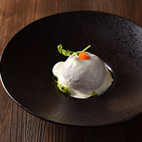 ▍燻鮭魚番茄沙拉 ▍ 選用鮭魚及季節番茄，搭配主廚特調優格醬汁，口感清爽而不膩。 |
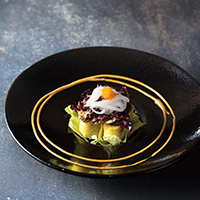 ▍海鮮時蔬捲 ▍ 日式蛋皮包裹季節時蔬佐時令海鮮，搭配主廚特調胡麻醬，口感清爽，層次豐富。 |
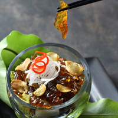 ▍魚皮野蔬沙拉 ▍ 魚皮搭配季節時蔬，以清爽和風醋汁調味。口感滑溜彈Q的前菜料理~ |
||
| ／刺身 烤.揚物 | ||||
|
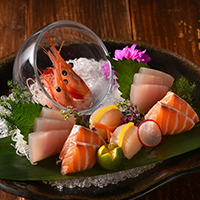 ▍刺身盛合 ▍ 特選季節新鮮海味，四種當令生鮮魚片盛合，緊實鮮甜的肉質，品嚐海洋最純粹的甘美味。(依人數以拼盤方式呈現，此為2人份示意圖) |
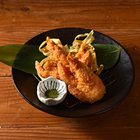 ▍黃金軟殼蝦 ▍ 金黃酥脆的軟殼蝦，卡滋有味、濃香四溢！ |
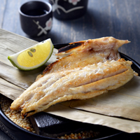 ▍鮮魚一夜干 ▍ 以一夜干手法原味火烤時旬鮮魚， 溫熱石隔著竹葉，暖著細緻魚肉， 風味鮮香、飽滿鮮嫩。 |
||
| ／強肴 | ||||
|
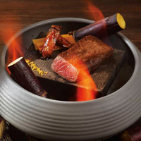 ▍蔗香牛小排(美) ▍ (強肴升級+180元，單點330元) 黑安格斯牛使用，於高溫火山岩炙烤出究極の味。 |
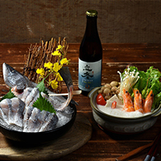 ▍美人魚豆乳鍋 ▍ (強肴升級+180元，單點330元) 整尾黃金海鱸魚佐純豆漿湯頭，香醇細膩の日本經典美人鍋。 |
|||
| 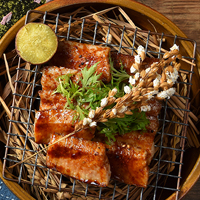 ▍稻香石燒豚 ▍ 上等豚排以獨門日式醬汁烘烤，充滿稻穗香氣，搭配栗子地瓜，展現豐饒之味。 |
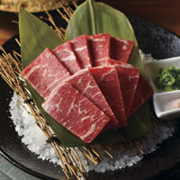 ▍岩烤石板牛(美) ▍ 牛肉於300°C岩板微炙5分熟、肉汁瞬間封存，佐以海鹽或主廚特製醬汁，口感鮮嫩多汁。 |
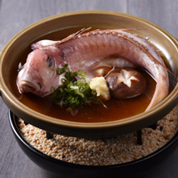 ▍時旬鮮魚蒸 ▍ 以清蒸方式烹調台灣在地現撈海魚，選用當季新鮮的魚種搭配蠔油醬汁，肉質細緻鮮甜！(每日直送) |
||
| 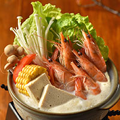 ▍海老野菜豆乳鍋 ▍ 以豆漿為湯底，搭配藍鑽蝦、新鮮時蔬，湯頭濃郁飽滿，是日本經典的「美人鍋」! |
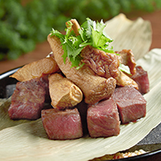 ▍牛肉箬竹燒(美) ▍ 特選板腱牛肉，以特調滷汁浸泡後，先煎後烤至七分熟，搭配山賊醬，口感微辣軟嫩。 |
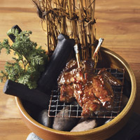 ▍煙燻醬燒羊排 ▍ 特選紐西蘭天然草飼小羔羊，以煙燻炭火醬烘烤出鮮嫩美味。 |
||
| 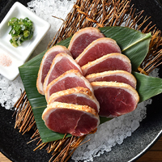 ▍岩燒櫻桃合鴨 ▍ 選用宜蘭櫻桃鴨胸肉以高溫岩板炙燒、鎖住8分熟的鮮嫩，佐以玫瑰岩鹽或主廚特製醬汁，鮮美滋味豐饒嘴邊。 |
||||
| ／釜飯 | ||||
| 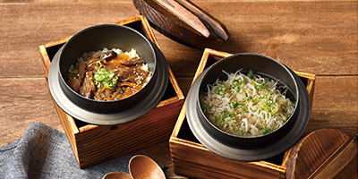 |
▍吻仔魚釜飯 / 日式牛肉釜飯(美、紐、澳) ▍ 以主廚特製高湯蒸煮而成，米飯口感Q彈， 是一道暖心及風味深遠的日式佳餚。 |
|||
| ／甘果物 | ||||
| 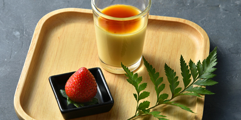 |
▍日式布丁佐時令鮮果 ▍ 特選當季新鮮水果搭配主廚手作日式布丁 |
|||
| ／飲料 | ||||
| 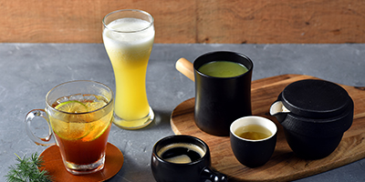 |
▍飲料 ▍ 黑糖氣泡飲 / 熱柚子綠茶 / 鳳梨苦瓜汁 / 熱黑豆抹茶 / 熱咖啡 |
|||
／宇治抹茶祭 (甘果物X飲料升級+70元，單點160元) |
||||
| 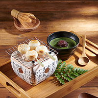 ▍烤糰子佐紅豆抹茶 ▍ 傳統日本烤糰子，微苦抹茶佐香甜紅豆，抹茶控大滿足！ |
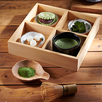 ▍抹茶白玉甜點組合 ▍ 主廚現刷宇治抹茶，搭配白玉、蕨餅最中餅三款經典日式甜點，品嚐來自京都的幸福滋味。 |
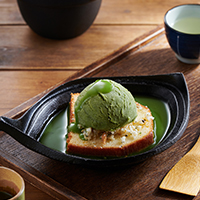 ▍抹茶冰淇淋熱蛋糕 ▍ 熱磅蛋糕佐抹茶冰淇淋，冰熱交融的極品美味。 |
||
※ 本餐廳得依季節更替調整菜單內容。如遇菜色內容調整，仍可於同等值商品中選擇。 ※ 凡持禮券消費者，您的消費權益詳見官網禮券查詢區。 |
||||